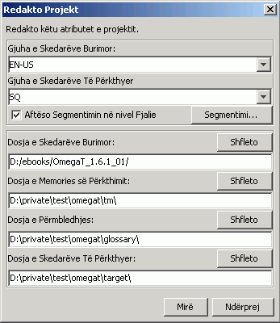

ose fillo të përdorësh OmegaT brenda 5 minutash
Ky udhërrëfyesi nisjes së çastit mbulon vetëm ato që janë bazike. Idealisht, të gjithë shfrytëzuesit duhet ta lexojnë doracakun e shfrytëzuesit që të njihet me çdo gjë që OmegaT ka për ta ofruar.
Ekrani i OmegaT përmban tri dritare distinkte. Secila nga këto mund të ndryshohet madhësia me anë të miut. Në të majtë është Redaktori ku ju shkruani përkthimin tuaj. Në të djathtë, në krye, është Vështruesi i Përputhjeve, ku paraqiten përputhjet memories së përkthimit. Në vijim është Vështruesi i Fjalorthit, ku paraqiten e përputhjet e përmbledhjes.
Në dritaren e Redaktorit OmegaT paraqet tekstin burimor 'të segmentuar' në fjali (ose paragrafë – shiko Segmentimi i Burimit!). Ju mund të përktheni këto segmente një nga një. Duke kaluar nga segmenti në segment përkthimet tuaja ruhet në një memorie përkthimi. Njëherë pasi që të gjithë segmente të jenë të përkthyera (ose më herët nëse ju kërkoni ) OmegaT do të përdor memorien e përkthimi për të krijuar dokument(et) të përkthyera në dosjen “Target”.
OmegaT organizon punon tuaj në të ashtuquajturën projekte përkthimi. Për çdo projekt OmegaT do të krijoj një bashkësi dosjes. Këto përdoren për të ruajtur dokumentet burimore që do të përkthehen, përmbledhje që do të donit t'i përdorni, dhe çfarëdo memorie përkthimi që ju doni ta përdorni. OmegaT gjithashtu krijon një dosje “Target” që do të përmban dokumentet përfundimtare të përkthyera.
Përzgjedh Projekt → Krijo... nga menyja.
Navigo te dosja se ku ju doni të ruani skedarët e projektit, dhe shkruani emrin për projektin e përkthimi. Ky emër do të përdoret për dosjen kryesore të projektit; të gjithë skedarët e projektit do të ruhen në atë dosje ose nëndosjet e tij.
OmegaT do t'iu pyes juve për të miratuar ose ndërruar dosjet që do të krijohen duke përdorur dialogun në vijim:

Ju thjeshtë mund të përdorni vendin e nëndosjeve, por sigurohuni së pari që kodet e gjuhës burimore dhe të përkthimit janë të sakta. -Përzgjedh kodin e gjuhës (2 shkronja) ose kodin gjuha-dhe-vendi (2 + 2 shkronja) nga lista rënëse, ose shkruani ato me dorë (mbahuni për shembullin 2-shkronjash). Bëje një shënim mental të nëndosjeve Target (për dokumentet tuaja të përkthyera).
Nëse ju doni që OmegaT të segmentoj sipas fjalive në vend të sipas "paragrafëve", është ide e mirë të kontroll të dyfishtë në Rregullat e Segmentimit .
Kur të shtypni Mirë për të pranuar krijimin e projektit, OmegaT do t'iu pyes të përzgjidhni dokumentet burimore për tu importuar. Ju mund të importoni skedar individual, ose të importoni trungje të tëra dosjesh (me të gjithë skedarët në të gjithën nëndosjet). Nëse ju aksidentalisht keni importuar dokumente të gabuara, ose tepër dokumente ju thjeshtë mund t'i hiqni ato nga dosja Source të OmegaT projektit (duke përdorur drejtuesin e sistemit të skedarëve, për shembull).
Për të kontrolluar listën e skedarëve që do të përkthehen, konsultoni dritaren Skedarët e Projektit (Menyja: Projekt → Skedarët e Projektit..., nëse ajo nuk hapet automatikisht). Nëse ju është dashur ta ndërroni përmbajtjen e dosjes Burimore, mbani mend që së pari të ringarkoni projektin (Menyja: Projekt → Ringarko). OmegaT si rëndom e hap skedarin e parë në projekt.
Mbani mend, OmegaT mund të përkthej skedarët në formatet në vijim. Çdo skedar tjetër do të injorohet.
Pasi që të keni përcaktuar një here projektin dhe skedarët që do të përkthehen, OmegaT do të hap skedarin burimor të parin në Redaktor. Segmenti i parë ndriçohet në të gjelbër; një kopje e tekstit burimor do të paraqitet më poshtë në“fushën shënjestër”. (Në këtë moment, i tërë teksti jashtë fushës shënjestër është i mbrojtur dhe nuk mund të ndryshohet.) Ju duhet të shkruani përkthimin brenda tagjeve <segmenti 0001> dhe <mbarimi i segmentit>, duke mbishkruar tekstin burimor.
Shtyp "ENTER" për të avancuar te segmenti pasues.
Vini re:
- Për të lëvizur nga pjesët tjera të tekstit, ose më lart ose më poshtë shtyp
dy herë në fjalinë ose paragrafin cilin ju doni ta hapni.
- Nëse ju parapëlqeni të përktheni në një fushë të zbraztë, vëre këtë opsion te Opsionet → Sjellja e Redaktimit....
Kur të shtypni "ENTER", ndodhin disa gjëra që nuk shihen: <br1> OmegaT shton qiftin e segmenteve (segmentin burimor dhe përkthimin e tij) në memorien e përkthimit dhe automatikisht i përkthen çdo segment identi në skedarët e projekteve tjera. Gjithashtu skanon memorien e përkthimin dhe përmbledhjen për përputhjen e segmentit pasues të pa përkthyer.
Nëse OmegaT gjen ndonjë përputhje të turbullt (30% ose më tepër– shihe manualin) për segmentin pasues në memorien e përkthimit, dhe i shfaq ato në Vështruesin e Përputhjeve. Rëndom përputhja e parë është e para-përzgjedhur në Vështruesin e Përputhjeve.
Për të ndërfutur një përputhje të memories së përkthimit nga Vështruesi i Përputhjeve në fushën shënjestër, ju mund t'i përdorni shkurtesat e tastierës:
Ctrl+I për të ndërfutur përputhjen e
para-përzgjedhur në pozitën e kursorit, ose...Ctrl+R për ta mbishkruar tërë segmentin me
përputhjen e para-përzgjedhur.Nëse janë gjetur ca përputhje dhe ju nuk parapëlqeni të përdorni përputhjen e para-përzgjedhur:
Ctrl+2 për përputhjen e dytë që është paraqitur, Ctrl+3 për përputhjen e tretë, etj.Ctrl+I ose Ctrl+R si më lart.(Ju mund t'i thoni OmegaT të ndërfut çfarëdo përputhjen të parë të përcaktuar automatikisht nga përqindja e përputhjes në fushën shënjestër kurdo që të hapet segmenti. Vëre këtë opsion duke përdorur Opsione → Sjellja e Redaktimit...)
Nëse OmegaT gjen në fjalorthin terma që përputhen 100%, ato do të paraqiten në Vështruesin e Fjalorthit. Ato nuk mund të transferohen me atë të shkurtesave.
Kur të keni përkthyer të gjitha segmente (ose nëse ju doni më herët), OmegaT do të përditësoj dokumentin(et) shënjestër duke përdorur përkthimet e ruajtura në memories e përkthimit.
Për ta bërë këtë, përzgjedh nga menyja Projekt → Krijo Dokumentet e Përkthyera.
OmegaT do të ndërtoj versionin e përkthyer të gjithë dokumenteve të përkthyeshme në dosjen Source të projektit, nëse janë ose nuk janë të përkthyera në tërësi. Skedarët e përkthyera pjesërisht ose në tërësi do të ruhen në dosjen e projektit Target.
Për ta finalizuar përkthimin tuaj,hapi skedarët shënjestër me aplikacionin e shoqëruar të tyre(shfletuesin, word processor...) për të kontrolluar përmbajtjen dhe formatimin e përkthimit tuaj. Ju mund t'i ktheheni OmegaT-së për të bërë përmirësimet e nevojshme; por mos harroni të rikrijoni dokumentet e përkthyera.
OmegaT siguron formatimin e dokumenteve burimore (të trasha, italike etj.) nuk humbet gjatë shënimit të tyre me tagje speciale. Tagjet e OmegaT përbëhen nga një ose më tepër shkronja të vazhduara nga një numër dhe ndonjëherë përdorin karakterin "/" (për shembu: <f0>, <br10/>, </s2> etj.).
Ju duhet të merreni me kujdes dhe të sigurohuni që ato përfshihet me përpikëri në segmentet shënjestër. (Shiko OmegaT Doracakun e shfrytëzuesit për redaktimin e avancuar të tagjeve.)
Në këtë shembull ne kemi ndriçuar tagjet në kuq për të bërë më të lehtë të shihen, por në OmegaT ato nuk do të jenë të ndriçuara.
Këtu është një shembu në HTML:
<p>Një font i paraqitjes nuk të përzgjidhet përmes dialogut <b>Font i paraqitjes</b>.
Hape përmes termit të menysë <i>Përcaktimet</i> > <i>Fonti
i paraqitjes...</i>. Në këtë dialog mund
të ndryshohet lloji i fontit dhe madhësia e tij.</p>
Këtu paraqite se si OmegaT do ta paraqes atë, të ndriçuar në të kuqe:
Një font i
paraqitjes nuk do të përzgjidhet përmes dialogut <b0>Fonti
i paraqitjes</b0>. Hape atë përmes termit
të menysë <i1>Përcaktimet</i1> > <i2>Fonti
i paraqitjes...</i2>. Lloji i fontit dhe
madhësia e tij mund të ndërrohen në këtë dialog.
Këtu është si ju do të përktheni atë (për shembull Afrikaans):
'n Mens
kan 'n ander vertoonfont kies met die <b0>Vertoonfont</b0>-dialoogkassie. Kies <i1>Opstelling</i1> > <i2>Vertoonfont...</i2> op die kieslys. Die lettertipe én die
lettergrootte kan met dié dialoogkassie verander word.
Kur OmegaT krijon dokumentet e përkthyera, HTML do të duket kështu:
<p>'n Mens kan 'n ander vertoonfont kies met die <b>Vertoonfont</b>-dialoogkassie.
Kies <i>Opstelling</i> > <i>Vertoonfont...</i> op die kieslys. Die lettertipe én die
lettergrootte kan met dié dialoogkassie verander word.</p>
OmegaT nuk i gjen automatikisht tagjet me gabime në dokumentin e përkthyer. Para se të plasoni dokumentin te klienti juaj, ju duhet ta kontrolloni tagjet tuaja për gabime.
Përzgjedh nga menyja Mjetet→ Valido Tagjet. Do të paraqitet një tabelë që paraqet segmentet ku tagjet e burimit dhe shënjestrës nuk korrespondojnë. Shtyp në numrin e segmentit.
Ju do të merrni automatikisht segmentet e gabuara në Redaktor, ku ju do të mund të përmirësoni tagjet.
Në disa raste gabimet e tagjeve madje mund të parandalojnë hapjen e tij. Kështu që ju duhet të sigurohuni që ju keni përmirësuar të gjitha gabimet e tagjeve para se të krijoni skedarët e përkthyer.
Përfundimisht, ju gjithnjë duhet të kontrolloni dy herë formatimin final duke hapur dokumentin e përkthyer me vështruesin ose redaktorin e shoqëruar të tij.